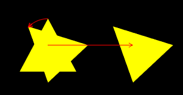
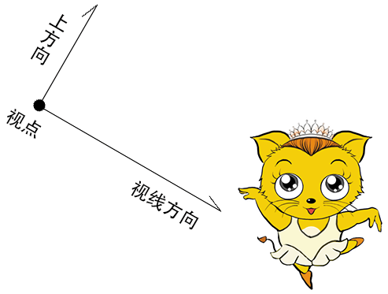
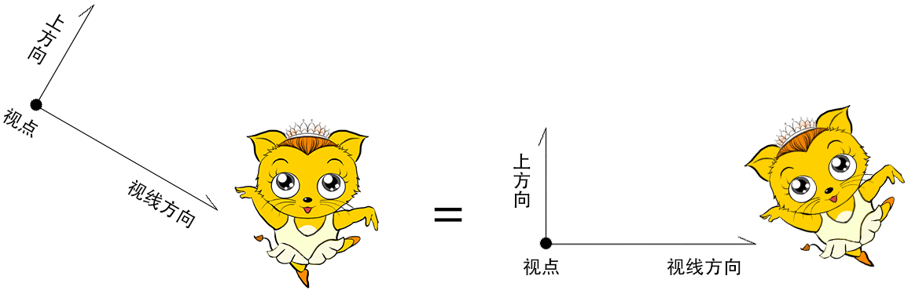
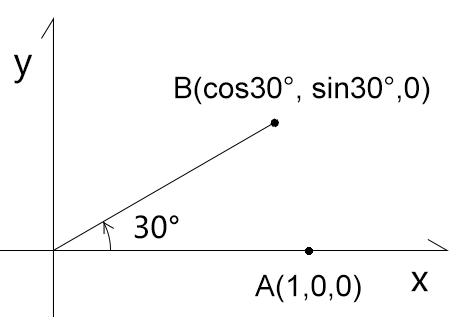
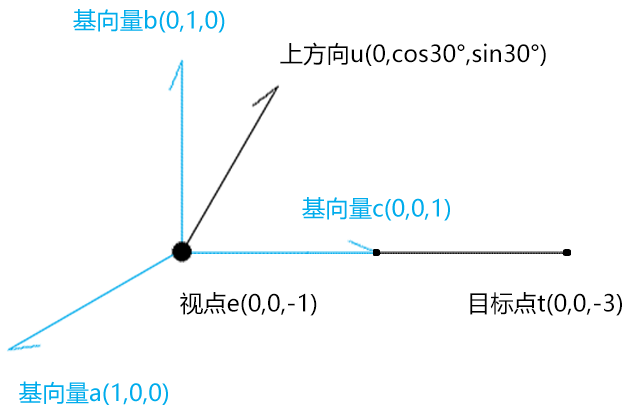
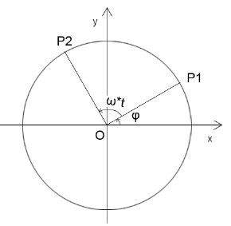
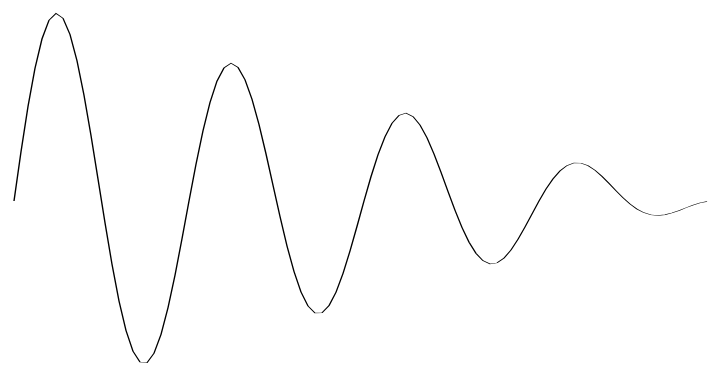

前言
变换有三种状态：平移、旋转、缩放。
在一个四维矩阵中，是可以包含所有的变换状态的。即，我们可以让图形进行一次性的平移、旋转和缩放，这样的变换就叫做复合变换。
课堂目标
- 理解复合变换的原理。
- 可以得心应手的变换图形。
知识点
- 矩阵乘法
- 不同变换顺序的差异
第一章 矩阵相乘
矩阵相乘可以实现复合变换，就比如先位移再旋转、先旋转在位移，或着连续位移。
接下来咱们先看一下两个矩阵是如何相乘的。
矩阵乘以矩阵的结果还是矩阵，我们可以通过矩阵库验证一下矩阵相乘的规律。
1.使用three.js的Matrix4 对象建立矩阵
const a=new Matrix4().set(
0, 1, 2, 3,
4, 5, 6, 7,
8, 9, 10,11,
12,13,14,15
)
const b=new Matrix4().set(
0, 10, 20, 30,
40, 50, 60, 70,
80, 90, 100,110,
120,130,140,150
)
注：set()方法里输入的矩阵是行主序的，但elements 输出的矩阵是列主序的。
const ca=a.elements
console.log(ca);
[
0, 4, 8, 12,
1, 5, 9, 13,
2, 6, 10, 14,
3, 7, 11, 15
]
const cb=b.elements
console.log(cb);
[
0, 40, 80, 120,
10, 50, 90, 130,
20, 60, 100, 140,
30, 70, 110, 150
]
2.让矩阵a乘以矩阵b
const c=a.multiply(b)
console.log(c.elements);
[
560, 1520, 2480, 3440,
620, 1740, 2860, 3980,
680, 1960, 3240, 4520,
740, 2180, 3620, 5060
]
分析一下结果
560=0*0 +1*40+2*80 +3*120
620=0*10+1*50+2*90 +3*130
680=0*20+1*60+2*100+3*140
740=0*30+1*70+2*110+3*150
1520=4*0 +5*40+6*80 +7*120
1740=4*10+5*50+6*90 +7*130
……
到此，我们应该能总结出矩阵a乘以矩阵b规律，以列主序的ca、cb为例：
先遍历ca的每一列，再遍历cb的每一行，将ca的每一列乘以cb的每一行，按照列主序排列后得到的结果。
或者，先遍历ca的每一行，再遍历cb的每一列，将ca的每一行乘以cb的每一列，按照行主序排列后得到的结果。
我们验证一下后者：
const cc=[]
for(let y=0;y<16;y+=4){
const [ax,ay,az,aw]=[ca[y],ca[y+1],ca[y+2],ca[y+3]]
for (let x=0;x<4;x++){
console.log(x);
const [bx,by,bz,bw]=[cb[x],cb[x+4],cb[x+8],cb[x+12]]
cc.push(ax*bx+ay*by+az*bz+aw*bw)
}
}
console.log(cc);
[
560, 1520, 2480, 3440,
620, 1740, 2860, 3980,
680, 1960, 3240, 4520,
740, 2180, 3620, 5060
]
其结果和矩阵库一致。
3.通过上面的规则可知
- 当两个矩阵的每个元素相互等比时
a*b=b*a
- 当两个矩阵的每个元素相互不等比时
a*b!=b*a
第二章 在实践中寻找复合变换的规律
通过实践，我们可以很容易的找到复合变换的规律。
接下咱们先写一个简单复合变换：位移加位移。
1-位移加位移
接下来我想让一个物体沿x 轴位移ax，沿y 轴位移ay后，再沿x 轴位移bx，沿y 轴位移by。
已知：
- 初始点位A(ax,ay,az,1.0)
- 初次位移：沿x 轴位移bx，沿y 轴位移by
- 第二次位移：沿x 轴位移cx，沿y 轴位移cy
求：变换后的位置F(fx,fy,fz,fw)
解：
1.设初次变换矩阵为bm(行主序)：
[
1.0,0.0,0.0,bx,
0.0,1.0,0.0,by,
0.0,0.0,1.0,0.0,
0.0,0.0,0.0,1.0,
]
则初次变换后的点F为：
F=bm*A
fx=(1.0,0.0,0.0,bx)*(ax,ay,az,1.0)=ax+bx
fy=(0.0,1.0,0.0,by)*(ax,ay,az,1.0)=ay+by
fz=(0.0,0.0,1.0,0.0)*(ax,ay,az,1.0)=az
fw=(0.0,0.0,0.0,1.0)*(ax,ay,az,1.0)=1.0
2.设第二次变换矩阵为cm(行主序)：
[
1.0,0.0,0.0,cx,
0.0,1.0,0.0,cy,
0.0,0.0,1.0,0.0,
0.0,0.0,0.0,1.0,
]
则第二次变换后的点F为第二次变换矩阵乘以上一次变换后的点F：
F=cm*F
fx=(1.0,0.0,0.0,cx)*(fx,fy,fz,1.0)=fx+cx
fy=(0.0,1.0,0.0,cy)*(fx,fy,fz,1.0)=fy+cy
fz=(0.0,0.0,1.0,0.0)*(fx,fy,fz,1.0)=fz
fw=(0.0,0.0,0.0,1.0)*(fx,fy,fz,1.0)=1.0
通过第一次的变换，我们也可以这么理解最终的点F：
fx=ax+bx+cx
fy=ay+by+cy
fz=az
fw=1.0
到目前为止，我们已经通过两次矩阵乘以向量的方法得到了F 点，那我们说好的矩阵乘以矩阵呢？
上面的点F还可以这么理解：
F=cm*bm*A
设cm*bm的结果为矩阵dm(行主序)，
参照dm中元素的索引位置：
[
0, 1, 2, 3,
4, 5, 6, 7,
8, 9, 10, 11,
12,13,14, 15
]
则dm中的第一行元素为：
dm[0]=(1.0,0.0,0.0,bx)*(1.0,0.0,0.0,0.0)=1.0
dm[1]=(1.0,0.0,0.0,bx)*(0.0,1.0,0.0,0.0)=0.0
dm[2]=(1.0,0.0,0.0,bx)*(0.0,0.0,1.0,0.0)=0.0
dm[3]=(1.0,0.0,0.0,bx)*(cx, cy, 0.0,1.0)=cx+bx
通过dm矩阵的第一行元素我们就可以得到点F的fx值了，我们验证一下：
fx=(1.0,0.0,0.0,cx+bx)*(ax,ay,az,1.0)=ax+cx+bx
这和我们之前两次矩阵乘以向量得到的结果是一样的。
接下来咱们在把矩阵dm 的第二行元素写一下：
dm[4]=(0.0,1.0,0.0,by)*(1.0,0.0,0.0,0.0)=0.0
dm[5]=(0.0,1.0,0.0,by)*(0.0,1.0,0.0,0.0)=1.0
dm[6]=(0.0,1.0,0.0,by)*(0.0,0.0,1.0,0.0)=0.0
dm[7]=(0.0,1.0,0.0,by)*(cx, cy, 0.0,1.0)=cy+by
验证一下：
fy=(0.0,1.0,0.0,cy+by)*(ax,ay,az,1.0)=ay+cy+by
接下来咱们在把矩阵dm 的第三行元素写一下：
dm[8] =(0.0,0.0,1.0,bz)*(1.0,0.0,0.0,0.0)=0.0
dm[9] =(0.0,0.0,1.0,bz)*(0.0,1.0,0.0,0.0)=0.0
dm[10]=(0.0,0.0,1.0,bz)*(0.0,0.0,1.0,0.0)=1.0
dm[11]=(0.0,0.0,1.0,bz)*(cx, cy, 0.0,1.0)=bz
2-先移动后旋转
代码如下：
const mr=new Matrix4()
mr.makeRotationZ(Math.PI/4)
const mt=new Matrix4()
mt.makeTranslation(0.3,0,0)
const matrix=mr.multiply(mt)
const u_Matrix=gl.getUniformLocation(gl.program,'u_Matrix')
gl.uniformMatrix4fv(u_Matrix,false,matrix.elements)
mr 是旋转矩阵
mt 是位移矩阵
mr.multiply(mt) 便是先位移再旋转
效果如下：

2-先旋转后移动
基于之前的先移动后旋转的代码改一下即可
const mr=new Matrix4()
mr.makeRotationZ(Math.PI/4)
const mt=new Matrix4()
mt.makeTranslation(0.3,0,0)
const matrix=mt.multiply(mr)
const u_Matrix=gl.getUniformLocation(gl.program,'u_Matrix')
gl.uniformMatrix4fv(u_Matrix,false,matrix.elements)
效果如下：

3-其它变换方式
矩阵相乘的性质决定了只要变换顺序不一样，那么变换结果就可能不一样。
我们再看一个旋转和缩放的例子。
3-1-旋转和缩放
- 先旋转后缩放
const mr=new Matrix4()
mr.makeRotationZ(Math.PI/4)
const ms=new Matrix4()
ms.makeScale(2,0.5,1)
const matrix=ms.multiply(mr)
const u_Matrix=gl.getUniformLocation(gl.program,'u_Matrix')
gl.uniformMatrix4fv(u_Matrix,false,matrix.elements)
makeScale() 是矩阵的缩放方法
- 先缩放后旋转
const matrix=mr.multiply(ms)
下图是两种效果的对比：

在此要注意一个性质：当缩放因子一致时，旋转和缩放没有先后之分。
如下代码：
const ms=new Matrix4()
ms.makeScale(2,2,2)
此是下面的两种变换结果都是一样的:
const matrix=ms.multiply(mr)
const matrix=mr.multiply(ms)
3-2-综合变换
Matrix4还有一个compose综合变换方法，它可以将所有变换信息都写进去，其变换顺序就是先缩放，再旋转，最后位移。
示例代码：
const matrix=new Matrix4()
const pos=new Vector3(0.3,0,0)
const rot=new Quaternion()
rot.setFromAxisAngle( new Vector3( 0, 0, 1 ), Math.PI / 4 )
const scale=new Vector3(2,0.5,1)
matrix.compose(pos,rot,scale)
const u_Matrix=gl.getUniformLocation(gl.program,'u_Matrix')
gl.uniformMatrix4fv(u_Matrix,false,matrix.elements)
compose ( position : Vector3, quaternion : Quaternion, scale : Vector3 )
- position 位置
- quaternion 用四元数存储的旋转数据
- scale 缩放
compose() 方法分解开来，就是这样的：
const mt=new Matrix4()
mt.makeTranslation(0.3,0,0)
const mr=new Matrix4()
mr.makeRotationZ(Math.PI/4)
const ms=new Matrix4()
ms.makeScale(2,0.5,1)
const matrix=mt.multiply(mr).multiply(ms)
const u_Matrix=gl.getUniformLocation(gl.program,'u_Matrix')
gl.uniformMatrix4fv(u_Matrix,false,matrix.elements)
到目前为止，我们对矩阵所做的，还只是最基础的练手，接下来再给大家说一个视图矩阵。
第三章 视图矩阵
视图矩阵是用于确定相机角度和位置的矩阵。
1-相机的定义

- 视点：相机的位置
- 视线方向：相机所看的方向
- 上方向：相机绕视线转动的方向
2-相对运动
当相机与它所拍摄的物体同时运动的时候，相机所拍摄的画面不会有任何改变。

因此，我们可以默认相机的视点就在零点，相机看向-z方向，其上方向就是y轴。
当我我们改变的相机的视点、视线和上方向的时候，只要相对的去改变场景中的物体即可。
而这个相对的去改变场景中的物体的矩阵，就是视图矩阵。
通过上面原理，我们可以知道，想要计算视图矩阵，只要让其满足以下条件即可：
- 把视点e(ex,ey,ez)对齐到 O点上
- 把视线c(cx,cy,cz) 旋转到-z 轴上
- 把上方向b(bx,by,bz) 旋转到y 轴上
- 把c与b的垂线a(ax,ay,az) 旋转到x 轴上
接下来我们便可以考虑如何通过算法实现上面的操作了。
3-正交矩阵的旋转
为了让大家更好的理解视图矩阵的运算，我们从基础说起。
题1

已知：点A(1,0,0)
求：把点A绕z 轴逆时针旋转30°，旋转到B点的行主序矩阵m1
解：
m1=[
cos30°,-sin30°,0,0,
sin30°,cos30°, 0,0,
0, 0, 1,0,
0, 0, 0,1,
]
B=m1*A
B.x=(cos30°,-sin30°,0,0)·(1,0,0,1)=cos30°
B.y=(sin30°,cos30°, 0,0)·(1,0,0,1)=sin30°
题2
继题1的已知条件
求：把点B绕z 轴逆时针旋转-30°，旋转到A点的列行序矩阵m2
解：
m2=[
cos-30°,-sin-30°,0,0,
sin-30°,cos-30°, 0,0,
0, 0, 1,0,
0, 0, 0,1,
]
m2=[
cos30°, sin30°, 0,0,
-sin30°,cos30°, 0,0,
0, 0, 1,0,
0, 0, 0,1,
]
观察题1、题2，我们可以发现两个规律：
- m2 是m1 的逆矩阵
- m2 也是m1 的转置矩阵
由此我们可以得到一个结论：正交旋转矩阵的逆矩阵就是其转置矩阵。
题3
已知：
三维直角坐标系m1，其基向量是：
- x(1,0,0)
- y(0,1,0)
- z(0,0,1)
三维直角坐标系m2，其基向量是：
- x(cos30°, sin30°,0)
- y(-sin30°,cos30°,0)
- z(0, 0, 1)
求：将m1中的基向量对齐到m2的行主序矩阵m3
解：
将m2的基向量x,y,z 中的x 分量写入m3第1行;
将m2的基向量x,y,z 中的y 分量写入m3第2行;
将m2的基向量x,y,z 中的z 分量写入m3第3行。
m3=[
cos30°,-sin30°,0,0,
sin30°,cos30°, 0,0,
0, 0, 1,0,
0, 0, 0,1,
]
题4
继题3的已知条件
求：将m2中的基向量对齐到m1的行主序矩阵m4
解：
由题3已知：将m1中的基向量对齐到m2的行主序矩阵是m3
由题4的问题可知：m4就是m3的逆矩阵
因为：正交旋转矩阵的逆矩阵就是其转置矩阵
所以：m4就是m3的转置矩阵
m3=[
cos30°,-sin30°,0,0,
sin30°,cos30°, 0,0,
0, 0, 1,0,
0, 0, 0,1,
]
m4=[
cos30°,sin30°,0,0,
-sin30°,cos30°,0,0,
0,0,1,0,
0,0,0,1
]
4-计算视图矩阵
- 先位移：写出把视点e(ex,ey,ez) 对齐到 O点上的行主序位移矩阵mt
mt=[
1,0,0,-ex,
0,1,0,-ey,
0,0,1,-ez,
0,0,0,1,
]
- 写出把{o;x,y,-z} 对齐到{e;a,b,c} 的行主序旋转矩阵mr1
把a,b,-c的x 分量写入mr1的第1行；
把a,b,-c的y 分量写入mr1的第2行；
把a,b,-c的z 分量写入mr1的第3行；
mr1=[
ax, bx, -cx, 0,
ay, by, -cy, 0,
az, bz, -cz, 0,
0, 0, 0, 1
]
计算mr1的逆矩阵mr2。
因为正交旋转矩阵的逆矩阵就是其转置矩阵，所以mr2就是mr1的转置矩阵。
mr2=[
ax, ay, az, 0,
bx, by, bz, 0,
-cx,-cy,-cz, 0,
0, 0, 0, 1
]
- 视图矩阵=mr2*mt
5-视图矩阵的代码实现
基于视点、目标点、上方向生成视图矩阵。
function getViewMatrix(e, t, u) {
//基向量c，视线
const c = new Vector3().subVectors(e, t).normalize()
//基向量a，视线和上方向的垂线
const a = new Vector3().crossVectors(u, c).normalize()
//基向量b，修正上方向
const b = new Vector3().crossVectors(c, a).normalize()
//正交旋转矩阵
const mr = new Matrix4().set(
...a, 0,
...b, 0,
-c.x, -c.y, -c.z, 0,
0, 0, 0, 1
)
//位移矩阵
const mt = new Matrix4().set(
1, 0, 0, -e.x,
0, 1, 0, -e.y,
0, 0, 1, -e.z,
0, 0, 0, 1
)
return mr.multiply(mt).elements
}
lookAt 方法就是从一个新的角度去看某一个东西的意思
- e 视点
- t 目标点
- u 上方向
在其中我借助了Three.js 的Vector3 对象
- subVectors(e, t) 向量e减向量t
- normalize() 向量的归一化
- crossVectors(u, d) 向量u 和向量d的叉乘
crossVectors( a, b ) {
const ax = a.x, ay = a.y, az = a.z;
const bx = b.x, by = b.y, bz = b.z;
this.x = ay * bz - az * by;
this.y = az * bx - ax * bz;
this.z = ax * by - ay * bx;
return this;
}
解释一下上面基向量a,b,c 的运算原理，以下图为例：

视线c 之所以是视点e减目标点t，是为了取一个正向的基向量。
c=(e-t)/|e-t|
c=(0,0,2)/2
c=(0,0,1)
基向量a是上方向u和向量c的叉乘
a=u^c/|u^c|
a=(cos30°,0,0)/cos30°
a=(1,0,0)
基向量b是向量c和向量a的叉乘，可以理解为把上方向摆正。
b=c^a/|c^a|
b=(0,1,0)/1
b=(0,1,0)
6-测试
1.顶点着色器
<script id="vertexShader" type="x-shader/x-vertex">
attribute vec4 a_Position;
//视图矩阵
uniform mat4 u_ViewMatrix;
void main(){
gl_Position = u_ViewMatrix*a_Position;
}
</script>
2.建立视图矩阵，并传递给顶点着色器
const u_ViewMatrix = gl.getUniformLocation(gl.program, 'u_ViewMatrix')
const viewMatrix = getViewMatrix(
new Vector3(0.3, 0.2, 0.5),
new Vector3(0.0, 0.1, 0),
new Vector3(0, 1, 0)
)
gl.uniformMatrix4fv(u_ViewMatrix, false, viewMatrix)
4.绘图方法
gl.clearColor(0.0, 0.0, 0.0, 1.0);
gl.clear(gl.COLOR_BUFFER_BIT);
gl.drawArrays(gl.LINES, 0, indices.length);
效果如下：

注：
three.js 里的lookAt() 方法便可以实现矩阵的正交旋转，其参数也是视点、目标点、上方向，它的实现原理和我们视图矩阵里说的正交旋转都是一样的。
const u_ViewMatrix = gl.getUniformLocation(gl.program, 'u_ViewMatrix')
const viewMatrix = new Matrix4().lookAt(
new Vector3(0.5, 0.5, 1),
new Vector3(0, 0, 0),
new Vector3(0, 1, 0),
)
gl.uniformMatrix4fv(u_ViewMatrix, false, viewMatrix.elements)
第四章 模型矩阵
在我们给了物体一个视图矩阵后，我们还可以再给它一个模型矩阵。
模型矩阵可以对物体进行位移、旋转、缩放变换。
比如我们想让物体沿z 旋转。
1.在顶点着色器中添加一个模型矩阵
<script id="vertexShader" type="x-shader/x-vertex">
attribute vec4 a_Position;
//模型矩阵
uniform mat4 u_ModelMatrix;
//视图矩阵
uniform mat4 u_ViewMatrix;
void main(){
gl_Position = u_ViewMatrix*u_ModelMatrix*a_Position;
}
</script>
2.在js中建立模型矩阵，并传递给顶点着色器
const u_ModelMatrix = gl.getUniformLocation(gl.program, 'u_ModelMatrix')
const u_ViewMatrix = gl.getUniformLocation(gl.program, 'u_ViewMatrix')
const modelMatrix = new Matrix4()
const viewMatrix = new Matrix4().lookAt(
new Vector3(0, 0.25, 1),
new Vector3(0, 0, 0),
new Vector3(0, 1, 0),
)
gl.uniformMatrix4fv(u_ModelMatrix, false, modelMatrix.elements)
gl.uniformMatrix4fv(u_ViewMatrix, false, viewMatrix.elements)
3.我们还可以添加一个旋转动画
let angle = 0;
!(function ani() {
angle += 0.02
modelMatrix.makeRotationY(angle)
gl.uniformMatrix4fv(u_ModelMatrix, false, modelMatrix.elements)
gl.clear(gl.COLOR_BUFFER_BIT);
gl.drawArrays(gl.LINES, 0, indices.length);
requestAnimationFrame(ani)
})()
4.我们还可以来个弹性动画
let angle = 0;
const minY = -0.70
const maxY = 0.7
let y = maxY
let vy = 0;
const ay = -0.001
const bounce = 1;
!(function ani() {
angle += 0.01
vy += ay;
y += vy
modelMatrix.makeRotationY(angle)
modelMatrix.setPosition(0, y, 0)
if (modelMatrix.elements[13] < minY) {
y = minY
vy *= -bounce
}
gl.uniformMatrix4fv(u_ModelMatrix, false, modelMatrix.elements)
gl.clear(gl.COLOR_BUFFER_BIT);
gl.drawArrays(gl.LINES, 0, indices.length);
requestAnimationFrame(ani)
})()
扩展-在视图矩阵中释放三角函数的美丽
在视图矩阵中，我们可以将算法和艺术相融合，让它充满乐趣。
就像下面的顶点，就是我通过三角函数来实现的。
风乍起，吹皱一池春水。

接下来，咱们就说一下正弦型函数 。
1-正弦型函数
1.正弦型函数公式
y=Asin(ωx+φ)
2.正弦型函数概念分析

已知：
- 圆O半径为A
- 点P1 在圆O上
- ∠xOP1=φ
- 点P1 围绕z轴旋转t 秒后，旋转到点P2的位置
- 点P1的旋转速度为ω/秒
可得：
点P1旋转的量就是ω*t
点P2基于x 正半轴的弧度就是∠xOP2=ω*t+φ
点P1 的转动周期T=周长/速度=2π/ω
点P1转动的频率f=1/T=ω/2π
3.正弦型函数的图像性质 y=Asin(ωx+φ)
- A 影响的是正弦曲线的波动幅度

- φ 影响的是正弦曲线的平移

- ω 影响的是正弦曲线的周期，ω 越大，周期越小
通过A、ω、φ我们可以实现正弦曲线的波浪衰减。

2-代码实现
2-1-布点
1.准备好顶点着色器
<script id="vertexShader" type="x-shader/x-vertex">
attribute vec4 a_Position;
uniform mat4 u_ViewMatrix;
void main(){
gl_Position = u_ViewMatrix*a_Position;
gl_PointSize=3.0;
}
</script>
2.着色器初始化，定义清理画布的底色。
const canvas = document.getElementById('canvas');
canvas.width = window.innerWidth;
canvas.height = window.innerHeight;
const gl = canvas.getContext('webgl');
const vsSource = document.getElementById('vertexShader').innerText;
const fsSource = document.getElementById('fragmentShader').innerText;
initShaders(gl, vsSource, fsSource);
gl.clearColor(0.0, 0.0, 0.0, 1.0);
3.建立视图矩阵
/* 视图矩阵 */
const viewMatrix = new Matrix4().lookAt(
new Vector3(0.2, 0.3, 1),
new Vector3(),
new Vector3(0, 1, 0)
)
4.建立波浪对象
const wave = new Poly({
gl,
vertices: crtVertices(),
uniforms: {
u_ViewMatrix: {
type: 'uniformMatrix4fv',
value: viewMatrix.elements
},
}
})
Poly 对象，我在之前"绘制三角形" 里说过，我这里又对其做了下调整，为其添加了uniforms 属性，用于获取和修改uniform 变量。
updateUniform() {
const {gl,uniforms}=this
for (let [key, val] of Object.entries(uniforms)) {
const { type, value } = val
const u = gl.getUniformLocation(gl.program, key)
if (type.includes('Matrix')) {
gl[type](u,false,value)
} else {
gl[type](u,value)
}
}
}
crtVertices() 建立顶点集合
/* 建立顶点集合 */
function crtVertices(offset = 0) {
const vertices = []
for (let z = minPosZ; z < maxPosZ; z += 0.04) {
for (let x = minPosX; x < maxPosX; x += 0.03) {
vertices.push(x, 0, z)
}
}
return vertices
}
5.渲染
gl.clear(gl.COLOR_BUFFER_BIT)
wave.draw()
效果如下：
2-2-塑形
1.建立比例尺，将空间坐标和弧度相映射
/* x,z 方向的空间坐标极值 */
const [minPosX, maxPosX, minPosZ, maxPosZ] = [
-0.7, 0.8, -1, 1
]
/* x,z 方向的弧度极值 */
const [minAngX, maxAngX, minAngZ, maxAngZ] = [
0, Math.PI * 4, 0, Math.PI * 2
]
/* 比例尺：将空间坐标和弧度相映射 */
const scalerX = ScaleLinear(
minPosX, minAngX,
maxPosX, maxAngX
)
const scalerZ = ScaleLinear(minPosZ, minAngZ, maxPosZ, maxAngZ)
2.建立正弦型函数
function SinFn(a, Omega, phi) {
return function (x) {
return a * Math.sin(Omega * x + phi);
}
}
SinFn中的参数与正弦型函数公式相对应：
y=Asin(ωx+φ)
- y-顶点高度y
- A-a
- ω-Omega
- φ-phi
3.更新顶点高度
基于顶点的x,z 获取两个方向的弧度
将z方向的弧度作为正弦函数的参数
a, Omega, phi 先写死
function updateVertices(offset = 0) {
const { vertices } = wave
for (let i = 0; i < vertices.length; i += 3) {
const [posX, posZ] = [vertices[i], vertices[i + 2]]
const angZ = scalerZ(posZ)
const Omega = 2
const a = 0.05
const phi = 0
vertices[i + 1] = SinFn(a, Omega, phi)(angZ)
}
}
效果如下：

4.修改updateVertices()方法中的 phi 值，使其随顶点的x位置变化
const phi = scalerX(posX)
- scalerX() 通过x轴上的空间坐标取弧度
效果如下：

5.修改修改updateVertices()方法中的 a值，使其随顶点的z向弧度变化
const a = Math.sin(angZ) * 0.1 + 0.03
效果如下：

2-3-风起
接下来我们可以基于正弦型函数的φ值，来一场动画，让它吹皱一池春水。
1.给updateVertices() 方法一个偏移值，让phi加上此值
function updateVertices(offset = 0) {
const { vertices } = wave
for (let i = 0; i < vertices.length; i += 3) {
const [posX, posZ] = [vertices[i], vertices[i + 2]]
const angZ = scalerZ(posZ)
const Omega = 2
const a = Math.sin(angZ) * 0.1 + 0.03
const phi = scalerX(posX) + offset
vertices[i + 1] = SinFn(a, Omega, phi)(angZ)
}
}
2.动画
let offset = 0
!(function ani() {
offset += 0.08
updateVertices(offset)
wave.updateBuffer()
gl.clear(gl.COLOR_BUFFER_BIT)
wave.draw()
requestAnimationFrame(ani)
})()
效果如下：
总结
关于矩阵的复合变换我就先说到这，其实矩阵相关的知识还有很多，比如透视矩阵、逆转置矩阵等等，我们这还只是冰山一角。
不过我们也不能说太深，因为我想让大家先总览全局，然后再层层深入，最后用实战项目夯实基础。
我们通过这一篇最后的两个案例，分别在矩阵里玩了模型的线和点，我没敢玩面，因为还玩不了。
至于为什么玩不了，学了下一篇的“颜色和纹理”，你就知道了。